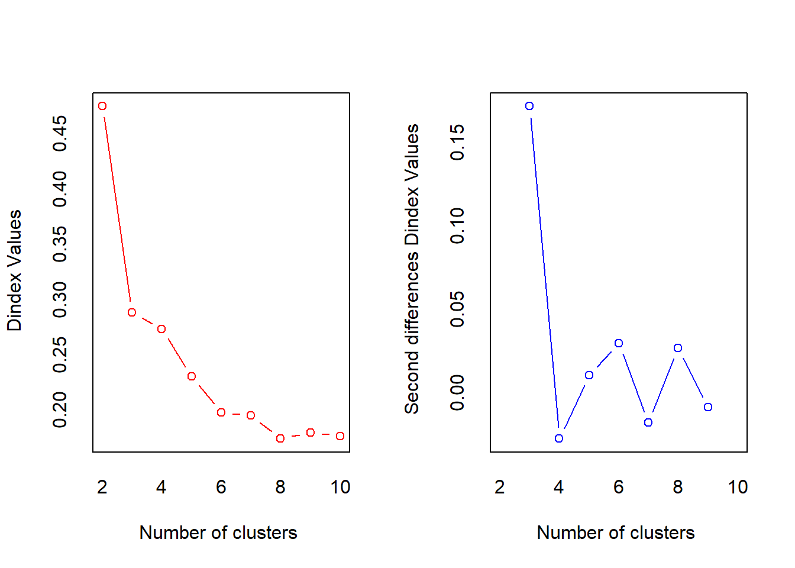

9 Clustering Analysis
Learning Outcomes
After finishing this chapter, students should be able to
- Explain the differences between classification and cluster problems.
- Describe briefly the main idea and procedure of hierarchical clustering, \(K\)-means, and model-based clustering methods.
- Conduct a clustering analysis using hierarchical clustering method, \(K\)-means, and model-based clustering in R.
- Interpret the R computer outputs of hierarchical clustering, \(K\)-means, and model-based clustering methods.
9.1 Introduction
We have already introduced multivariate data analysis and classification. This note introduces another major application in machine learning: clustering.
The main difference between a clustering problem and a classification problem is that the class labels are unknown for clustering. The objectives of a clustering problem are
- Determine the proper number of clusters \(K\).
- Group the observations into \(K\) clusters.
- Allocate new observations to one of those \(K\) clusters.
9.2 Clustering Methods
Hierarchical clustering method, \(K\)-means, and model-based clustering will be covered.
9.2.1 Hierarchical Method
Like the forward selection and backward elimination model selection methods in multiple regression, either merging (start with one observation as one group) or division (start with all observation in one cluster) can be used in hierarchical methods. Suppose there are \(n\) observations, we can calculate the \(n\times n\) pairwise distance matrix using Euclidean, Manhattan, Mahalanobis, Hamming, and Gower’s distance. Steps to conduct a hierarchical clustering are as follows:
- One observation one group
- Merge the two groups with the smallest distance or largest similarity
- Repeat step 2 until all observations are in one group.
There are three way to measure the distance between two groups \(G_i\) and \(G_j\), \(d(G_i, G_j)\).
- single linkage: \(d(G_i, G_j)=\min_{p\in G_i, q\in G_j} d(p,q)\).The distance between the closest pair of objects belonging to two different groups.
- complete linkage: \(d(G_i, G_j)=\max_{p\in G_i, q\in G_j} d(p,q)\).The distance between the furthest pair of objects belonging to two different groups.
- average linkage:\(d(G_i, G_j)=\text{average}_{p\in G_i, q\in G_j} d(p,q)\).The average distance of all between-group pairs.
Example: Hierarchical Clustering
Let \(x_1=5, x_2=3, x_3=9, x_4=6, x_5=1\).
- Find the distance matrix.
## 1 2 3 4
## 2 2
## 3 4 6
## 4 1 3 3
## 5 4 2 8 5- Conduct a hierarchical clustering with single linkage.
\[ \begin{aligned} d_{(1,4), 2}&=\min\{d_{12}, d_{42}\}=\min\{2, 3\}=2\\ d_{(1,4), 3}&=\min\{d_{13}, d_{43}\}=\min\{4, 3\}=3\\ d_{(1,4), 5}&=\min\{d_{15}, d_{45}\}=\min\{4, 5\}=4\\ \end{aligned} \]
We can either merge \(\{x_1, x_4\}\) with \(x_2\) or \(x_2\) with \(x_5\), both of which have distance 2. I prefer to keep the group size smaller; therefore, I merge \(x_2\) and \(x_5\). Update the distance matrix.
\[ \begin{aligned} d_{(1,4), (2,5)}&=\min\{d_{(1,4),2}, d_{(1,4),5}\}=\min\{2, 4\}=2\\ d_{(2,5), 3}&=\min\{d_{23}, d_{53}\}=\min\{6, 8\}=6\\ \end{aligned} \]
We merge \(\{x_1, x_4\}\) and \(\{x_2, x_5\}\). Lastly, we merger \(\{x_1, x_4, x_2, x_5\}\) and \(x_3\) with distance \[ d_{(1,4,2,5),3}=\min\{d_{(1,4),3}, d_{(2,5),3}\}=\min\{3, 6\}=3 \] As a result, the cluster dendrogram is as follows:
x <- c(5,3,9,6,1)
shcm <- hclust(dist(x),method="single")
plot(shcm, ylab="Distance",xlab="Variables",hang=-1)- Conduct a hierarchical clustering with complete linkage.
Again, we first merge \(x_1\) and \(x_4\) and update the distance matrix using the complete linkage.
\[ \begin{aligned} d_{(1,4), 2}&=\max\{d_{12}, d_{42}\}=\max\{2, 3\}=3\\ d_{(1,4), 3}&=\max\{d_{13}, d_{43}\}=\max\{4, 3\}=4\\ d_{(1,4), 5}&=\max\{d_{15}, d_{45}\}=\max\{4, 5\}=5\\ \end{aligned} \]
Next, we merge \(x_2\) and \(x_5\) and update the distance matrix.
\[ \begin{aligned} d_{(1,4), (2,5)}&=\max\{d_{(1,4),2}, d_{(1,4),5}\}=\max\{3, 5\}=5\\ d_{(2,5), 3}&=\max\{d_{23}, d_{53}\}=\max\{6, 8\}=8\\ \end{aligned} \] We merge \(\{x_1, x_4\}\) and \(x_3\). Lastly, we merger \(\{x_1, x_4, x_3\}\) and \(\{x_2, x-5\}\) with distance \[ d_{(1,4,3),(2,5)}=\max\{d_{(1,4),(2,5)}, d_{3,(2,5)}\}=\max\{5, 8\}=8 \] As a result, the cluster dendrogram is as follows:
x <- c(5,3,9,6,1)
chcm <- hclust(dist(x),method="complete")
plot(chcm, ylab="Distance",xlab="Variables",hang=-1)- Conduct a hierarchical clustering with average linkage.
Again, we first merge \(x_1\) and \(x_4\) and update the distance matrix using the average linkage. [
\[\begin{array}{c|ccc} &(1, 4)&2&3\\ \hline 2&2.5&&\\ 3&3.5&6&\\ 5&4.5&2&8\\ \end{array}\]]
\[ \begin{aligned} d_{(1,4), 2}&=\frac{d_{12}+d_{42}}{2}=\frac{2+3}{2}=2.5\\ d_{(1,4), 3}&=\frac{d_{13}+d_{43}}{2}=\frac{4+3}{2}=3.5\\ d_{(1,4), 5}&=\frac{d_{15}+d_{45}}{2}=\frac{4+5}{2}=4.5\\ \end{aligned} \]
Next, we merge \(x_2\) and \(x_5\) and update the distance matrix.
[ \[\begin{array}{c|cc} &(1, 4)&(2, 5)\\ \hline (2, 5)&3.5&\\ 3&3.5&7\\ \end{array}\]]
\[ \begin{aligned} d_{(1,4), (2,5)}&=\frac{d_{(1,4),2}+d_{(1,4),5}}{2}=\frac{2.5+4.5}{2}=3.5\\ d_{(2,5), 3}&=\frac{d_{23}+d_{53}}{2}=\frac{6+8}{2}=7\\ \end{aligned} \]
We merge \(\{x_1, x_4\}\) and \(\{x_2, x_5\}\). Lastly, we merger \(\{x_1, x_4, x_2, x_5\}\) and \(x_3\) with distance \[ d_{(1,4,2,5),3}=\frac{d_{(1,4),3}+d_{(2,5),3}}{2}=\frac{3.5+7}{2}=5.25 \] As a result, the cluster dendrogram is as follows:
x <- c(5,3,9,6,1)
ahcm <- hclust(dist(x),method="average")
plot(ahcm, ylab="Distance",xlab="Variables",hang=-1)
This dendrogram tells us that cutting at distance=5 results in two clusters \(\{x_3\}, \{x_1,x_4,x_2,x_5\}\); cutting at distance=3 results in three clusters \(\{x_3\}, \{x_1,x_4\}, \{x_2,x_5\}\).
9.2.2 K-Means
Compared to the hierarchical clustering, \(K\)-mean is much more efficient in computation. The algorithm of \(K\)-mean is as follows:
- Arbitrarily pick the centers of the \(K\) clusters \(\mathbf{m}_1^{(\mbox{old})}, \mathbf{m}_2^{(\mbox{old})},\cdots, \mathbf{m}_K^{(\mbox{old})}\).
- Assign each object to one and only one of the clusters, choose the one with the shortest distance from the object to the group center. That is \(Y=\text{argmin}_j d(\mathbf{x},\mathbf{m}_j)\).
- Update the group (cluster) centers \[ \mathbf{m}_i^{(\mbox{new})}=\frac{1}{n_i}\sum_{\mathbf{x}\in G_i} \mathbf{x}, i=1, 2, \cdots, K, \quad \mbox{$n_i$ is the number of objects in group $i$} \]
- Repeat steps (2) and (3) until convergence, i.e., the centers won’t change anymore.
Here is an illustration adopted from Dr. Jeffrey L. Andrews’s notes. Twenty-five observations were generated from bivariate normal distributions with mean vectors \(\mathbf{\mu}_1=(0, 0)^T\) and \(\mathbf{\mu}_2=(5, -5)^T\), and covariance matrix \[ \mathbf{\Sigma}_1=\mathbf{\Sigma}_2=\left[ \begin{array}{cc} 1&0\\ 0&1 \end{array} \right]. \]
The K-means method converges in three iterations, i.e., the labels of observation don’t change after three rounds.
Note: The result of \(K\)-means will be affected by the initial value, it is important to run the algorithm multiple times from different random initial configurations.
Let’s revisit the simple example.
Example: K-Means Clustering
Let \(x_1=5, x_2=3, x_3=9, x_4=6, x_5=1\). Assume \(K=2\) clusters.
- [(a)] If we set the initial centers \(\mathbf{m}_1^{(0)}=0, \mathbf{m}_2^{(0)}=11\).
- Allocation. Group 1: \(\{x_5, x_2, x_1\}\); group 2: \(\{x_4, x_3\}\).
- Recalculate the centers. \[ \mathbf{m}_1^{(1)}=\frac{1+3+5}{3}=3, \mathbf{m}_2^{(1)}=\frac{6+9}{2}=7.5 \]
- Re-allocate. Group 1: \(\{x_5, x_2, x_1\}\); group 2: \(\{x_4, x_3\}\). The centers are the same as the previous step. Algorithm converges. The final grouping is group 1: \(\{x_5, x_2, x_1\}\) and group 2: \(\{x_4, x_3\}\) with centers 3 and 7.5 respectively.
- [(b)] If we set the initial centers \(\mathbf{m}_1^{(0)}=4, \mathbf{m}_2^{(0)}=5\).
- Allocation. Group 1: \(\{x_5, x_2\}\); group 2: \(\{x_1, x_4, x_3\}\).
- Recalculate the centers. \[ \mathbf{m}_1^{(1)}=\frac{1+3}{2}=2, \mathbf{m}_2^{(1)}=\frac{5+6+9}{3}=6.667 \]
- Re-allocate. Group 1: \(\{x_5, x_2\}\); group 2: \(\{x_1, x_4, x_3\}\). The centers are the same as the previous step. Algorithm converges. The final grouping is group 1: \(\{x_5, x_2\}\) and group 2: \(\{x_1, x_4, x_3\}\) with centers 2 and 6.667 respectively.
9.2.3 Model-Based Clustering
The model-based clustering method models the joint distribution of the data using a mixture model of \(K\) components \[ f(\mathbf{x})=\sum_{i=1}^K p_if_i(\mathbf{x}), \quad \mbox{ with component proportions $p_i\ge 0$ and $\sum p_i=1$.} \] A popular choice of the components is \(f_i(\mathbf{x})\sim \mbox{MVN}(\mathbf{\mu}_i, \mathbf{\Sigma}_i)\), which results in a multivariate normal mixture model. Suppose there are \(n\) independent observations \(\mathbf{x}_1, \mathbf{x}_2, \cdots, \mathbf{x}_n\), the likelihood function of the multivariate normal mixture is \[ L(p_i, \mathbf{\mu}_i, \mathbf{\Sigma}_i)=\prod_{j=1}^n f(\mathbf{x}_j)=\prod_{j=1}^n \left(\sum_{i=1}^K p_i f_i(\mathbf{x}_j) \right)=\prod_{j=1}^n \left(\sum_{i=1}^K p_i \frac{1}{(2\pi)^{p/2}|\mathbf{\Sigma}_i|^{1/2}}\exp\{-\frac{1}{2}(\mathbf{x}_j-\mathbf{\mu}_i)^T\mathbf{\Sigma}_i^{-1}(\mathbf{x}_j-\mathbf{\mu}_i)\} \right). \] There are a lot of unknown parameters in the above model:
- The mixture proportions \(p_1, p_2, \cdots, p_K\) with the constraint \(\sum p_i=1 \Longrightarrow K-1\) parameters.
- The mean vectors \(\mathbf{\mu}_i, i=1, \cdots, K\), each mean vector is a \(p\times 1\) vector \(\Longrightarrow p\times K\) parameters. -The covariance matrices \(\mathbf{\Sigma}_i, i=1, \cdots, K\). A covariance matrix is symmetric with \(\text{var}(X_i), i=1, \cdots, p\) as the diagonal elements and covariance \(\text{cov}(X_i, X_j), i<j , i,j=1, \cdots, p\). Therefore, each covariance matrix consists of \(\binom{p}{2}+p=\frac{p(p+1)}{2}\) parameters. There are \(K\) covariance matrices \(\Longrightarrow \frac{p(p+1)}{2}\times K\) parameters.
As a result, the full model has \((k-1)+pK+\frac{p(p+1)}{2}\times K\) parameters. Take the Iris data for example, with \(K=3, p=4\), the number of parameters of the mixture model ends up to be 44. When \(p\) is large, the following reduced models can be considered:
[ \[\begin{array}{c|c} \hline \text{Covariance structure}&\text{Total # of parameters}\\ \hline \mathbf{\Sigma}_i=\eta \mathbf{I}&(k-1)+pK+1\\ \mathbf{\Sigma}_i=\eta_i \mathbf{I}&(k-1)+pK+K\\ \mathbf{\Sigma}_i=\eta_i \mbox{diag}(\lambda_1, \lambda_2, \cdots, \lambda_p)&(k-1)+pK+K+p\\ \hline \end{array}\]]
Maximum likelihood method can be used to estimate the values of the parameters. The main idea of maximum likelihood estimate (MLE) is to find the values of the parameters such that the likelihood function \(L_{\mbox{max}}\) is maximized. The Akaike Information criterion (AIC) and the Bayesian Information criterion (BIC) are two popular model selection criterion. We select a model that gives the largest AIC or BIC which are given by \[ \mbox{AIC}=2\ln L_{\mbox{max}}-2(\mbox{\# of free parameters}); \quad \mbox{BIC}=2\ln L_{\mbox{max}}-\ln (n) (\mbox{\# of free parameters}) \] where \(n\) is the number of observations. BIC is more stringent on the number of parameters than AIC, since \(\ln (n)>2\) for all \(n\ge 8\)
EM Algorithm
In order to solve the MLE of the mixture model, membership information (each object belongs to which group) is required. The membership information; however, is missing. Therefore, the Expectation-Maximization (EM) algorithm is used to find the MLE. The EM algorithm is a very popular method handling missing values.
In order to capture the membership information, we introduce a vector of \(K\) binary (unobserved) variables \(\mathbf{Z}_i^T=[Z_{i1}, Z_{i2}, \cdots, Z_{iK}]\) for each object \(\mathbf{x}_i\), where \(z_{ij}=1, z_{il}=0, l\ne j\) if object \(i\) belongs to group \(j\). Then the membership weight of \(\mathbf{x}_i\) in group \(j\) is \[ w_{ij}=P(Z_{ij}=1|\mathbf{x}_i)=E(Z_{ij}|\mathbf{x}_i)=P(Z_{ij}=1|\mathbf{x}_i)=\frac{f_j(\mathbf{x}_i)p_j}{\sum_{m=1}^K f_m(\mathbf{x}_i)p_m}, \quad i=1, 2, \cdots, n, \quad j=1, 2,\cdots, K \] For each \(\mathbf{x}_i\), \(\sum_{j=1}^K w_{ij}=1\). As a result, we have a \(n\times K\) membership matrix with each row sum equal to 1.
The steps of the EM algorithm are as follows:
- Set the initial values for the parameters \(p_1, \cdots, p_K; \mathbf{\mu}_1, \cdots, \mathbf{\mu}_K; \mathbf{\Sigma}_1, \cdots, \mathbf{\Sigma}_K\).
- E-step. Update the membership weight \(w_{ij}=E(Z_{ij})\): \[ w_{ij}=\frac{f_j(\mathbf{x}_i)p_j}{\sum_{m=1}^K f_m(\mathbf{x}_i)p_m}, \quad i=1, 2, \cdots, n, \quad j=1, 2,\cdots, K \]
- M-step. Update the parameters \[ p_j^{\mathbf{new}}=\frac{n_j}{n}, \quad \mbox{with } \quad n_j=\sum_{i=1}^n w_{ij} \quad (\mbox{sum of $j$ column of the membership weight matrix}) \] \[ \mathbf{\mu}_j^{\mbox{new}}=\frac{1}{n_j}\sum_{i=1}^n w_{ij}\mathbf{x}_i, \quad \mathbf{\Sigma}_j^{\mbox{new}}=\frac{1}{n_j}\sum_{i=1}^n w_{ij}(\mathbf{x}_i-\mathbf{\mu}_j^{\mbox{new}})(\mathbf{x}_i-\mathbf{\mu}_j^{\mbox{new}})^T \]
- Repeat steps (2) & (3) until convergence (no change).
Note: the \(K\)-means algorithm can be regarded as a special of the multivariate normal mixture model by letting \(\mathbf{\Sigma}_i=\mathbf{I}\) and the membership weight be 1 for the group with the largest posterior probability and 0 for all the other groups, i.e., \[ w_{ij}=\left\{ \begin{array}{ll} 1&\mbox{if group $j$ has the largest posterior probability},\\ 0&\mbox{otherwise}. \end{array} \right. \]
9.2.3.1 Example: Model-based Clustering
## 'Mclust' model object: (VVV,2)
##
## Available components:
## [1] "call" "data" "modelName" "n"
## [5] "d" "G" "BIC" "loglik"
## [9] "df" "bic" "icl" "hypvol"
## [13] "parameters" "z" "classification" "uncertainty"
## [1] 1 1 1 1 1 1 1 1 1 1 1 1 1 1 1 1 1 1 1 1 1 1 1 1 1 1 1 1 1 1 1 1 1 1 1 1 1
## [38] 1 1 1 1 1 1 1 1 1 1 1 1 1 2 2 2 2 2 2 2 2 2 2 2 2 2 2 2 2 2 2 2 2 2 2 2 2
## [75] 2 2 2 2 2 2 2 2 2 2 2 2 2 2 2 2 2 2 2 2 2 2 2 2 2 2 2 2 2 2 2 2 2 2 2 2 2
## [112] 2 2 2 2 2 2 2 2 2 2 2 2 2 2 2 2 2 2 2 2 2 2 2 2 2 2 2 2 2 2 2 2 2 2 2 2 2
## [149] 2 2If \(\verb`VVV`\) (varying volume, shape, and orientation) model is used, the optimal number of clusters is 2 based on the computer output. As we know that versicolor and virginica are more difficult to separate. The model-based clustering method classifies setosa as one cluster and versicolor and virginica as another cluster. If we use only the \(\verb`Petal.Length`\) and \(\verb`Petal.Width`\) as predictors, the optimal number of clusters is three which is correct.
## 'Mclust' model object: (VVV,3)
##
## Available components:
## [1] "call" "data" "modelName" "n"
## [5] "d" "G" "BIC" "loglik"
## [9] "df" "bic" "icl" "hypvol"
## [13] "parameters" "z" "classification" "uncertainty"##
## 1 2 3
## setosa 50 0 0
## versicolor 0 49 1
## virginica 0 3 47The \(\texttt{modelNames}\) parameter in the \(\texttt{Mclust}\) function allows us to specify the type of model to fit. It is a character vector that can take different values representing combinations of component and covariance structures. Type \(\texttt{?mclustModelNames}\) in the R console to retrieve the information on the available model names. The following models are available in package \(\texttt{mclust}\).
- \(\textbf{Univariate Mixture}\) -“E”: equal variance (one-dimensional) -“V”: varying/unequal variance (one-dimensional)
2.\(\textbf{Multivariate Mixture}\)
- “EII”: Spherical, equal volume (variance).
- “VII”: Spherical, varying/unequal volume (variance).
- “EEI”: Diagonal, equal volume and shape.
- “VEI”: Diagonal, varying volume, equal shape
- “EVI”: Diagonal, equal volume, varying shape.
- “VVI”: Diagonal, varying volume and shape.
- “EEE”: Ellipsoidal, equal volume, shape, and orientation.
- “VEE”: Ellipsoidal, equal shape and orientation.
- “EVE”: Ellipsoidal, equal volume and orientation.
- “VVE”: Ellipsoidal, equal orientation.
- “EEV”: Ellipsoidal, equal volume and equal shape.
- “VEV”: Ellipsoidal, equal shape.
- “EVV”: Ellipsoidal, equal volume.
- “VVV”: Ellipsoidal, varying volume, shape, and orientation.
3.\(\textbf{Single Component}\)
- “X”: univariate normal
- “XII”: spherical multivariate normal
- “XII”: diagonal multivariate normal
- “XXX”: ellipsoidal multivariate normal
9.2.4 Pros and Cons of Clustering Methods
The following table summarizes some of the pros and cons of hierarchical clustering, \(K\)-means and model-based clustering methods. \[ \begin{array}{c|c|c} \hline \text{Methods}&\text{Pros}&\text{Cons}\\ \hline \text{Hierarchical}&\text{no need to specify $K$}; &\text{generally unique solution}\\ &\text{dendrogram easy to interpret}; &\text{expensive computation}\\ \hline \text{$K$-means}&\text{low computation cost}; &\text{solution depends on initial value}\\ &\text{intuitive}; & \text{large variation}\\ \hline \text{Model-Based}&\text{MLE has good properties}; &\text{results not valid if data do not} \\ &\text{simultaneously determine $K$ and the centers of the clusters}&\text{follow multivariate normal distribution}\\ \hline \end{array} \]
9.3 Determine \(K\): Number of Clusters
The optimal number of clusters can be determined by several methods.
9.3.1 The Elbow Plot Method
We use the \(\verb`elbow plot`\) (scree plot) to help identify the most proper value of \(K\). Recall the decomposition of the total variation of the observations (SST) into between-group variation (SSB) and within-group variation (SSW), i.e., \(SST=SSB+SSW\). If all objects are in one group, then \(SSW=SST\). The within-group variation drops when number of clusters \(K\) increases. The \(\verb`elbow plot`\) plots SSW versus # of groups, we choose the value of \(K\) at where the plot starts flat. Recall the resulting dendrogram of clustering the observations \(x_1=5, x_2=3, x_3=9, x_4=6, x_5=1\) using hierarchical clustering with average linkage is
To draw the scree plot, we calculate the within-cluster variation SSW for different values of \(K\):
- When \(K=2\), the two clusters are \(\{x_1, x_4, x_2, x_5\}\) and \(\{x_3\}\). The centers for the two groups are \(m_1=\frac{5+6+3+1}{4}=3.75\) and \(m_2=9\). And the \[ SSW=[(5-3.75)^2+(6-3.75)^2+(3-3.75)^2+(1-3.75)^2]+0=14.75 \]
- When \(K=3\), the three clusters are \(\{x_1, x_4\}\),\(\{x_2, x_5\}\) and \(\{x_3\}\). The centers for the three groups are \(m_1=\frac{5+6}{2}=5.5, m_2=\frac{3+1}{2}=2\) and \(m_3=9\). And the \[ SSW=[(5-5.5)^2+(6-5.5)^2]+[(3-2)^2+(1-2)^2]+0=2.5 \]
- When \(K=4\), the four clusters are \(\{x_1, x_4\}, \{x_2\}, \{x_5\}\) and \(\{x_3\}\). The centers for the four groups are \(m_1=\frac{5+6}{2}=5.5, m_2=3, m_3=1\) and \(m_4=9\). And the \[ SSW=[(5-5.5)^2+(6-5.5)^2]+0+0+0=0.5 \]
The scree plot is given by
plot(2:4, c(14.75,2.5,0.5),xlab="K: # of Groups", ylab="SSW: Within Sum of Squares", cex=1.5,type="o")
The scree plot shows that curve becomes flat at \(K=3\); therefore, \(K=3\) is a proper number of clusters. We can calculate the within-group sum of squares using K-means:
9.3.2 The Silhouette Score
The silhouette score is a measure of how similar an object is to its own cluster (cohesion) compared to other clusters (separation). It ranges from -1 to 1, where a high value indicates that the object is well matched to its own cluster and poorly matched to neighboring clusters. The formula for the silhouette score for a single data point ii is given by: \[ S(i)=\frac{b(i)-a(i)}{\max\{a(i), b(i)\}} \] where \(a(i)\) is the average distance from the th data point to the other data points in the same cluster (cohesion), \(b(i)\) is the smallest average distance from the th data point to data points in a different cluster, minimized over clusters (separation). The overall silhouette score for the clustering is the average of the silhouette scores for all data points. If the silhouette score is close to 1, it indicates that the object is well matched to its own cluster and poorly matched to neighboring clusters. If it’s close to -1, it suggests that the object is poorly matched to its own cluster and well matched to neighboring clusters.
library(cluster)
kvec <- 2:4
klen <- length(kvec)
ss <- numeric(klen)
for (i in 1:klen) {
kmeans_result <- kmeans(x, centers = kvec[i])
temp <- silhouette(kmeans_result$cluster, dist(x))
obj <- summary(temp)
ss[i] <- obj$avg.width
}
plot(kvec, ss, type = "b", main = "Silhouette Method", xlab = "Number of Clusters", ylab = "Average Silhouette Width")Since \(K=2\) gives the largest silhouette score, the optimal number of clusters is two.
9.3.3 Gap Statistics
Gap statistics compare the clustering performance of the actual data with that of a reference dataset with no inherent clustering structure. It can be calculate as \[ \text{Gap}(k)=\frac{1}{B}\sum_{b=1}^B \log (W_b)-\log(W_k) \] where \(W_k\) is the total intra-cluster variation for the clustering solution with \(k\) clusters, \(B\) is the number of bootstrap samples drawn from the reference dataset, \(W_b\) is the total intra-cluster variation for the \(\texttt{b}\)th bootstrap sample.
The optimal number of clusters is often chosen as the value of \(k\) that maximizes the Gap Statistics. The idea is that if the clustering solution for the actual data is better than the clustering solutions for random data, then the Gap Statistics will be positive, indicating a meaningful structure in the data for the chosen number of clusters.
Two built-in functions in R can be used to determine the optimal number of clusters:
- \(\verb`fviz.nbclust`\) function from package \(\verb`factoextra`\): using Elbow, Silhouhette and Gap statistic methods.
- \(\verb`NbClust`\) function: voting of 30 indices for choosing the best number of clusters.
Take the Iris data for example. We standardize the features before conducting clustering analysis.
library(factoextra)
library(NbClust)
# Elbow method
fviz_nbclust(scale(iris[,-5]), kmeans, method = "wss") +
geom_vline(xintercept = 4, linetype = 2)+
labs(subtitle = "Elbow method")# Silhouette method
fviz_nbclust(scale(iris[,-5]), kmeans, method = "silhouette")+
labs(subtitle = "Silhouette method")# Gap statistic method
# nboot = 50 to keep the function speedy.
# recommended value: nboot= 500 for your analysis.
# Use verbose = FALSE to hide computing progression.
set.seed(123)
fviz_nbclust(scale(iris[,-5]), kmeans, nstart = 25, method = "gap_stat", nboot = 50)+
labs(subtitle = "Gap statistic method")#voting of multiple indices
nb <- NbClust(scale(iris[,-5]), distance = "euclidean",min.nc=2, max.nc=10,
method = "kmeans",index = "all")## *** : The Hubert index is a graphical method of determining the number of clusters.
## In the plot of Hubert index, we seek a significant knee that corresponds to a
## significant increase of the value of the measure i.e the significant peak in Hubert
## index second differences plot.
## ## *** : The D index is a graphical method of determining the number of clusters.
## In the plot of D index, we seek a significant knee (the significant peak in Dindex
## second differences plot) that corresponds to a significant increase of the value of
## the measure.
##
## *******************************************************************
## * Among all indices:
## * 11 proposed 2 as the best number of clusters
## * 10 proposed 3 as the best number of clusters
## * 1 proposed 4 as the best number of clusters
## * 1 proposed 6 as the best number of clusters
## * 1 proposed 10 as the best number of clusters
##
## ***** Conclusion *****
##
## * According to the majority rule, the best number of clusters is 2
##
##
## *******************************************************************nb2 <- NbClust(scale(iris[,-c(1,2,5)]), distance = "euclidean",min.nc=2, max.nc=10,
method = "kmeans",index = "all")## *** : The Hubert index is a graphical method of determining the number of clusters.
## In the plot of Hubert index, we seek a significant knee that corresponds to a
## significant increase of the value of the measure i.e the significant peak in Hubert
## index second differences plot.
## 
## *** : The D index is a graphical method of determining the number of clusters.
## In the plot of D index, we seek a significant knee (the significant peak in Dindex
## second differences plot) that corresponds to a significant increase of the value of
## the measure.
##
## *******************************************************************
## * Among all indices:
## * 10 proposed 2 as the best number of clusters
## * 10 proposed 3 as the best number of clusters
## * 2 proposed 8 as the best number of clusters
## * 2 proposed 9 as the best number of clusters
##
## ***** Conclusion *****
##
## * According to the majority rule, the best number of clusters is 2
##
##
## *******************************************************************Again, the optimal number of clusters is two when using all four predictors while the optimal number of clusters is either two or three when using only and .
Side-Note on the EM Algorithm
The main idea underlying the EM algorithm is as follows. Suppose we observe data partially. Let \(Y\) presents the data we observed and \(Z\) the missing data. Together, we have the complete data \(X=(Y, Z)\). Let \(g(y, z\mid \theta)\) be the density function based on the complete data and \(f(y\mid \theta)\) be the density function based on the observed data. Since \(z\) is unobserved/latent, we cannot evaluate \(g(y, z\mid \theta)\) using the regular maximum likelihood method. However, the density function based on the observed data can be calculated as \[ f(y\mid \theta)=\int g(y, z\mid \theta)dz, \] and then it is straightforward to apply the MLE method to \(f(y\mid \theta)\).
Given this setup, the basic steps of the EM algorithm works as follows:
- E-step: Compute the expected value of the latent variables given the observed data (\(y\)) and the current parameter estimates (\(\theta_t\)) be the current estimate of \(\theta\). That is, \[ Q(\theta\mid\theta_t)=\mathbb{E}_Z\left[\log g(y,z\mid\theta)\mid y, \theta_t\right]. \] The expectation is taken with respect to the missing data density, i.e., \[ h(z\mid y,\theta)=\frac{g(y,z\mid\theta)}{f(y\mid\theta)}. \]
- M-step: Maximize the expected log-likelihood \(Q(\theta\mid\theta_t)\) with respect to \(\theta\) to get the next value of \(\theta_{t+1}\).
- Repeat the E-step and M-step until the parameters converge or until a predefined number of iterations is reached.
One appealing property of the EM algorithm is that the likelihood function based on the observed data \(\log f(y|\theta)\) always increases with each iteration, i.e., \[ \log f(y|\theta_{t+1})-\log f(y|\theta_t)\ge 0. \]
\(\textbf{Proof}:\) \[\begin{align*} \log f(y\mid\theta_{t+1})-\log f(y\mid\theta_t)& = \log\int g(y,z\mid\theta_{t+1})dz - \log\int g(y,z\mid\theta_t)dz=\log\frac{\int g(y,z\mid\theta_{t+1})dz}{\int g(y,z\mid\theta_t)dz}\\ & =\log\frac{\int g(y,z\mid\theta_{t})\frac{g(y,z\mid\theta_{t+1})}{g(y,z\mid\theta_t)}dz}{\int g(y,z\mid\theta_t)dz}=\log \int\frac{g(y,z\mid\theta_{t})}{\int g(y,z\mid\theta_{t})}\frac{g(y,z\mid\theta_{t+1})}{g(y,z\mid\theta_t)}dz\\ &=\log \int \frac{g(y,z\mid\theta_{t+1})}{g(y,z\mid\theta_t)}h(z\mid y, \theta_t)dz=\log\mathbb{E}_{Z}\left [\frac{g(y,z\mid\theta_{t+1})}{g(y,z\mid\theta_t)}\right]\\ &\ge \mathbb{E}\left[\log \frac{g(y,z\mid\theta_{t+1})}{g(y,z\mid\theta_t)} \right]=\mathbb{E}_{Z}\left[\log g(y,z\mid\theta_{t+1}\right]-\mathbb{E}_{Z}\left[\log g(y,z\mid\theta_{t}\right]\\ &=Q(\theta_{t+1}\mid \theta_t)-Q(\theta_t\mid \theta_t)\ge 0. \end{align*}\]
Here are several methods and techniques to diagnose convergence of the EM algorithm:
- Monitor the log-likelihood values across iterations. In the EM algorithm, the log-likelihood should increase for each iteration. If the log-likelihood stops increasing or becomes flat, it might indicate convergence. Set a tolerance threshold for the change in log-likelihood or parameter estimates. If the change falls below this threshold, consider the algorithm converged.
- Use information criteria such as the Akaike Information Criterion (AIC) or the Bayesian Information Criterion (BIC) to assess model fit. Lower values indicate better fit, and a stabilized or minimal change may indicate convergence. \[ \text{AIC}=-2\log(L)+2k; \quad \text{BIC}=-2\log(L)+k\log(n) \] where \(L\) is the maximum likelihood of the model, \(k\) is the number of estimated parameters in the model, and \(n\) is the sample size.
- If applicable, run the EM algorithm with multiple initial values or chains. Compare the results across different runs to ensure consistency and convergence.
\(\textbf{Example}\): EM Algorithm for Gaussian Mixture Models
Suppose \(y_1, \cdots, y_n\) are sampled independently from a mixture of two normal distributions with density: \[ f(y\mid\theta)=\lambda f_1(y\mid\mu_1,\sigma_1^2) + (1-\lambda)f_2(y\mid\mu_2,\sigma_2^2). \]
- Suppose \(\lambda=0.4, \mu_1=0, \sigma_1=1, \mu_2=3, \sigma_2=1\), generate \(n=1000\) observations from the Gaussian mixture model. Create a data frame with \(x\) as the values and \(y\) as the class label \(\{1, 2\}\).
- Suppose we don’t know the class label, we can use the EM algorithm to estimate the parameters, i.e., \(\lambda, \mu_i, \sigma_1=i, i=1, 2\).
[(2a)] If the class label is unknown, we need to introduce a latent variable \(Z\) to indicate the class label: \(z=1\) for class 1 and \(z=0\) for class 2. The latent variable \(Z\) can be modeled by a Bernoulli distribution, \(Z\sim \text{Bernoulli}(\lambda)\). Given the data \(x_1, \cdots, x_n\) and class label \(z_1, \cdots, z_n\), write down the likelihood function of the completed data. \[ g(x,z\mid\theta)= [f_1(x\mid\mu_1,\sigma_1^2)]^{z}[f_2(x\mid\mu_2,\sigma^2_2)]^{1-z}\lambda^z(1-\lambda)^{1-z}, \quad \text{with }z=0, 1. \] It can be shown that the likelihood function based on the observed data is \[ f(x\mid\theta)=\sum _{z=0}^1[f_1(x\mid\mu_1,\sigma_1^2)]^{z}[f_2(x\mid\mu_2,\sigma^2_2)]^{1-z}\lambda^z(1-\lambda)^{1-z}. \] And then the log-likelihood function based on the completed data is \[ \log g(x, z\mid\theta) = \sum_{i=1}^n [z_i\log f_1(x_i\mid\mu_1,\sigma^2_1) + (1-z_i)\log f_2(x_i\mid\mu_2,\sigma^2_2) + z_i\log\lambda + (1-z_i)\log(1-\lambda)]. \]
[(2b)] E-step of the EM algorithm: calculate \begin{align*} Q()&=Z[g(x, z)]\ &=\ &={i=1}^n \ &=_{i=1}^n _if_1(x_i_1,_1^2)
(1-_i) f_2(x_i_2,_2^2)
_i
(1-i)(1-)\ & = {i=1}^n _i
(1-_i)+ _i\ &+ (1-_i)(1-). \end{align*} Note that the conditional distribution of \(Z\) \[ h(z\mid x,\theta) \propto [\lambda f_1(x\mid\mu_1,\sigma_1^2)]^z[(1-\lambda)f_2(x\mid\mu_2,\sigma_2^2)]^{1-z}\sim \text{Bernoulli}\left(\frac{\lambda f_1(x\mid\mu_1,\sigma_1^2)}{\lambda f_1(x\mid\mu_1,\sigma_1^2)+ (1-\lambda)f_2(x\mid\mu_2,\sigma_2^2)} \right). \] Therefore, \[ \pi_i=\mathbb{E}[z_i\mid x_i, \theta]=\frac{\lambda f_1(x\mid\mu_1,\sigma_1^2)}{\lambda f_1(x_i\mid\mu_1,\sigma_1^2)+ (1-\lambda)f_2(x_i\mid\mu_2,\sigma_2^2)} \]
[(2c)] M-step of the EM algorithm: find the values of \(\theta\) such that \[ Q(\theta)=\sum_{i=1}^n\pi_i\left[ -\frac{1}{2}\log 2\pi\sigma_1^2-\frac{1}{2\sigma_1^2}(x_i-\mu_1)^2 \right]+(1-\pi_i)\left[-\frac{1}{2}\log 2\pi\sigma_2^2-\frac{1}{2\sigma_2^2}(x_i-\mu_2)^2\right]+\pi_i\log\lambda+(1-\pi_i)\log(1-\lambda) \] is maximized. Take the derivatives with respect to \(\lambda, \mu_1, \mu_2, \sigma_1^2, \sigma_2^2\), we obtain
\[\begin{align*} \frac{\partial Q}{\partial \lambda}&=0\Longrightarrow \sum\left[\pi_i \frac{1}{\lambda}+(1-\pi_i)\frac{1}{1-\lambda}(-1)\right]\Longrightarrow \hat \lambda=\frac{\sum \pi_i}{n}\\ \frac{\partial Q}{\partial \mu_1}&=0\Longrightarrow \sum \left[\pi_i (-\frac{1}{2\sigma_1^2})2(x_i-\mu_1)(-1)\right]=0\Longrightarrow \hat \mu_1 =\frac{\sum \pi_i x_i}{\sum \pi_i}\\ \frac{\partial Q}{\partial \mu_2}&=0\Longrightarrow \sum \left[(1-\pi_i) (-\frac{1}{2\sigma_2^2})2(x_i-\mu_2)(-1)\right]=0\Longrightarrow \hat \mu_2 =\frac{\sum (1-\pi_i) x_i}{\sum (1-\pi_i)}\\ \frac{\partial Q}{\partial \sigma_1^2}&=0\Longrightarrow \sum \left[\pi_i (0-\frac{1}{\sigma_1^2})-\frac{1}{2(\sigma_1^2)^2}(-1)(x_i-\mu_1)^2\right]=0\Longrightarrow \hat \sigma^2_1=\frac{\sum\pi_i(x_i-\mu_1)^2}{\sum\pi_i}\\ \frac{\partial Q}{\partial \sigma_2^2}&=0\Longrightarrow \sum \left[(1-\pi_i) (0-\frac{1}{\sigma_2^2})-\frac{1}{2(\sigma_2^2)^2}(-1)(x_i-\mu_2)^2\right]=0\Longrightarrow \hat \sigma^2_2=\frac{\sum (1-\pi_i)(x_i-\mu_2)^2}{\sum(1-\pi_i)} \end{align*}\]
We first generate observations from a mixture of two univariate normal distributions.
n <- 1000
lambda <- 0.4
mu1 <- 0
mu2 <- 3
sigma1 <- 1
sigma2 <- 1
n1 <- n*lambda
n2 <- n-n1
set.seed(4061)
x1 <- rnorm(n1, mu1, sigma1)
x2 <- rnorm(n2, mu2, sigma2)
df <- data.frame(x=c(x1,x2), y=rep(c(1,2), c(n1, n2)))We can also use the built-in R function.
## ----------------------------------------------------
## Gaussian finite mixture model fitted by EM algorithm
## ----------------------------------------------------
##
## Mclust E (univariate, equal variance) model with 2 components:
##
## log-likelihood n df BIC ICL
## -1918.038 1000 4 -3863.706 -4014.206
##
## Clustering table:
## 1 2
## 400 600## $pro
## [1] 0.4002299 0.5997701
##
## $mean
## 1 2
## -0.02290644 2.95847477
##
## $variance
## $variance$modelName
## [1] "E"
##
## $variance$d
## [1] 1
##
## $variance$G
## [1] 2
##
## $variance$sigmasq
## [1] 0.9714779Here is another built-in R function to fit mixture Gaussian models.
## number of iterations= 103## summary of normalmixEM object:
## comp 1 comp 2
## lambda 0.40899673 0.591003
## mu 0.00958599 2.980212
## sigma 1.01195669 0.967534
## loglik at estimate: -1917.941Revisit Learning Outcomes
After finishing this chapter, students should be able to
- Explain the differences between classification and cluster problems.
- Describe briefly the main idea and procedure of hierarchical clustering, \(K\)-means, and model-based clustering methods.
- Conduct a clustering analysis using hierarchical clustering method, \(K\)-means, and model-based clustering in R.
- Interpret the R computer outputs of hierarchical clustering, \(K\)-means, and model-based clustering methods.